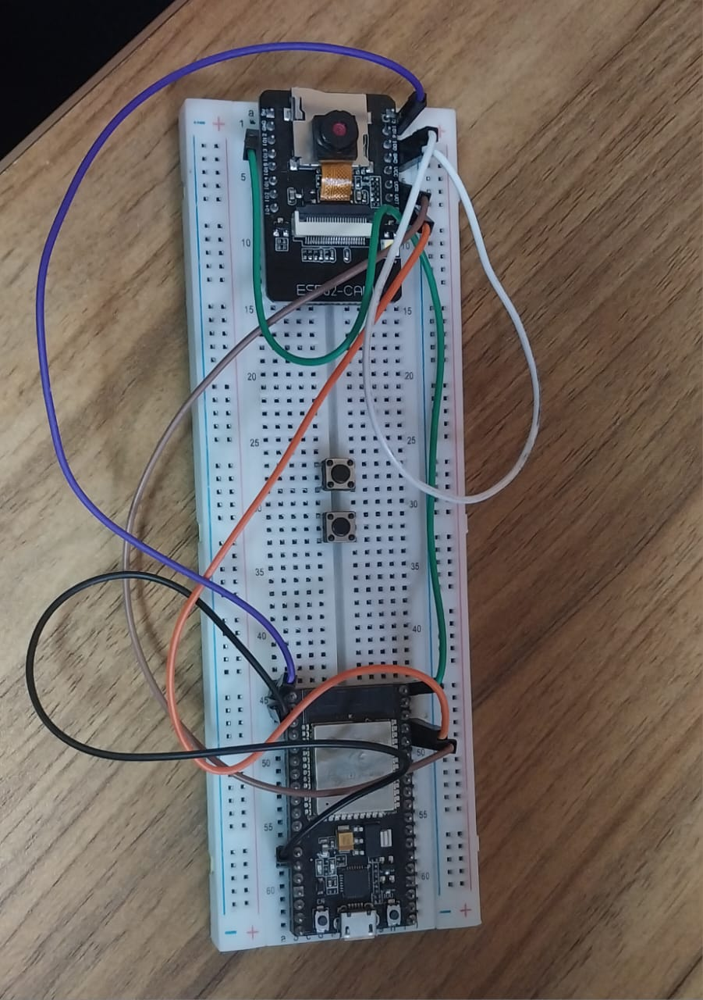

Week 10: ESP32-CAM
This module introduces the ESP32-CAM, a small module with an ESP32-S microcontroller and a camera, ideal for various IoT projects requiring image capture.
Key Learnings:
- Introduction to ESP32-CAM: Understanding the hardware and capabilities of the ESP32-CAM module.
- ESP32-CAM Web Server: Setting up a web server on ESP32-CAM to stream video or capture images remotely.
Projects/Exercises:
Day 1: Introduction to ESP32-CAM.
Day 2: ESP32-CAM Web server.

Relevant Resources: